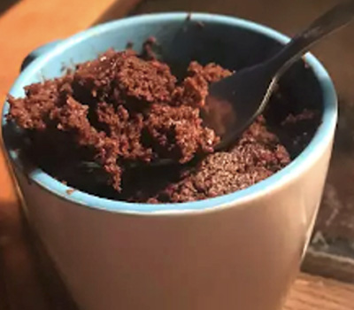

Microwave Chocolate Mug Cake

Description
This is my own version of the chocolate microwave mug cake. This chocolaty fudgy treat is truly decadent and
great for nights when I need a yummy dessert that is ready in less than 10 minutes! Chocolate chips make this recipe even better.
Estimated Times
- Prep: 5 mins
- Cook: 2 mins
- Total: 7 mins
- Servings: 1
Ingredients
- ¼ cup all-purpose flour
- ¼ cup white sugar
- 2 tablespoons unsweetened cocoa powder
- ⅛ teaspoon baking soda
- ⅛ teaspoon salt
- 3 tablespoons milk
- 2 tablespoons canola oil
- 1 tablespoon water
- ¼ teaspoon vanilla extract
Directions
-
Mix flour, sugar, cocoa powder, baking soda,
and salt in a large microwave-safe mug; stir in milk, canola oil, water, and vanilla extract.
-
Cook in microwave until cake is done in the middle, about 1 minute 45 seconds.
View more Recipes